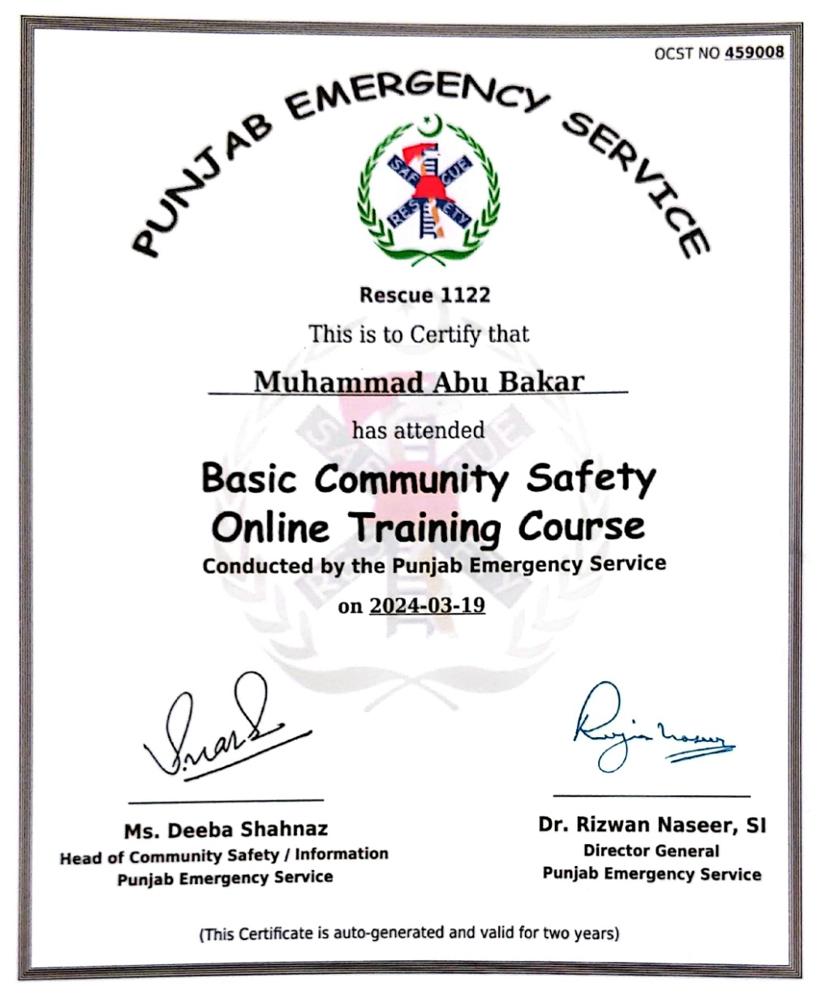
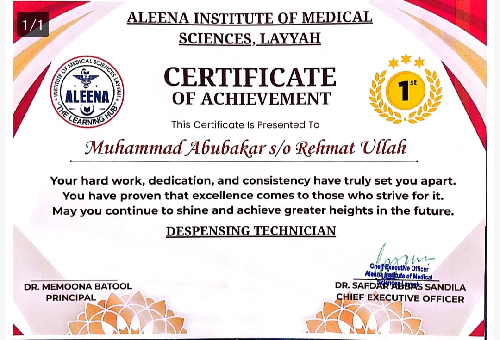
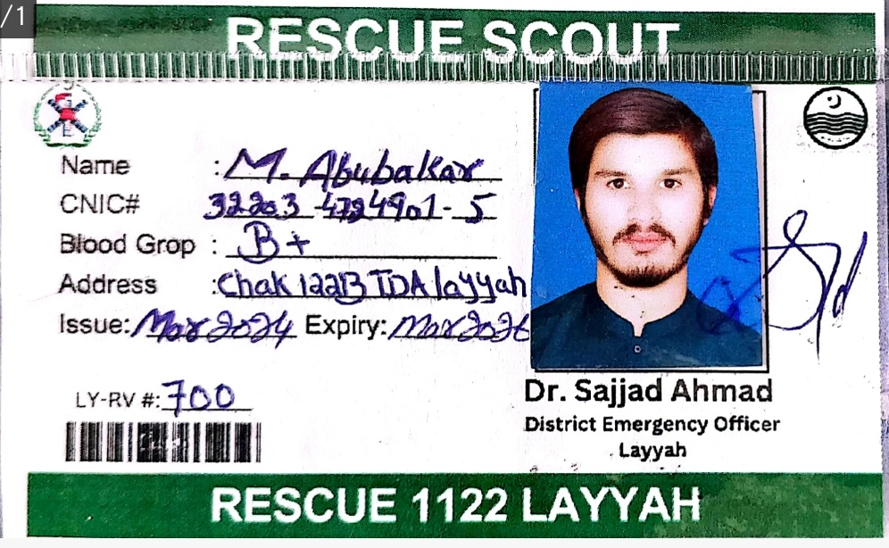

Credentials
Educational Certificates
Four verified certifications that showcase his expertise and dedication.
Community Action For Disaster Response
Punjab Emergency Service

Basic Community Safety Online Training
Punjab Emergency Service

Certificate of Achievement
Aleena College

Pharmacy Technician Diploma
Aleena Institute of Medical Sciences
